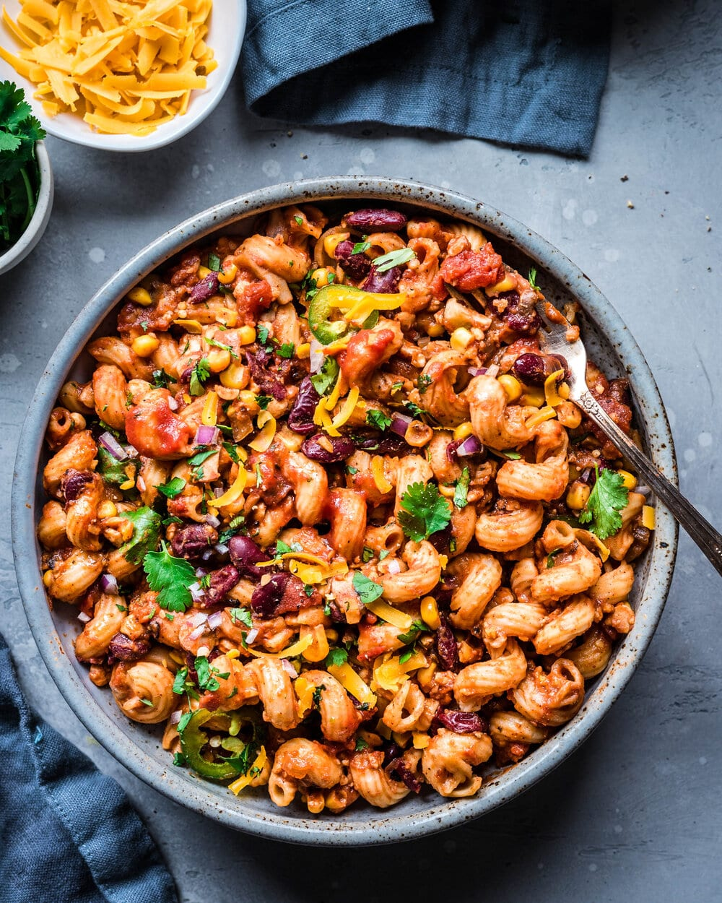

Vegan One Pot

Description
So today we have an easy recipe for One-Pot Vegan Chili Mac. It’s vegan (obvi), and easy to make gluten-free, oil-free, and soy-free!
A protein-packed chili meets pasta in this One-Pot Vegan Chili Mac! Easy and quick and made with simple ingredients, this is a perfect hearty weeknight-friendly and budget-friendly dinner! Easy to make gluten-free, soy-free, and oil-free.
Ingredients
- 1 tablespoon olive oil
- 1 medium yellow onion, diced
- 6 cloves garlic, finely chopped
- 8 ounces (227g) mushrooms, chopped (I use cremini mushrooms)
- 1 (8-ounce / 227g) block of tempeh, grated or crumbled
- 1 tablespoon chili powder
- 1 teaspoon smoked paprika (regular paprika is also fine)
- 1 teaspoon oregano
- 2 teaspoons cumin
- ½ teaspoon cayenne pepper (optional, for a slightly spicy version)
- 1 ½ teaspoons kosher salt, plus more to taste
- 4 cups (946 mL) vegetable broth
- 1 (15-ounce / 440g) can pinto, kidney, or black beans drained and rinsed
- 1 (28-ounce / 790g) can crushed tomatoes, fire roasted
- 2 tablespoons tomato paste
- 1 (15-ounce / 430g) can sweet corn, drained and rinsed
- 12 ounces (340g) elbow pasta or cavatappi pasta (gluten-free as needed)
- 2-3 teaspoons agave nectar, maple syrup, coconut sugar, or brown sugar
Toppings
- 1 cup (16g) fresh cilantro, chopped
- Several squeezes of lime juice
- 1 cup shredded vegan cheese (optional but recommended)
- Vegan sour cream, for serving (optional but recommended)
- Pickled red onions***** (optional)
Steps
- In a Dutch oven (or a large nonstick soup pot), heat the 1 tablespoon oil (or 1/3 cup water) over medium heat. Once the oil is hot (or once the water is simmering), add the onions and cook for 2 minutes, seasoning with a pinch of salt. Add the garlic, mushrooms, and crumbled tempeh, and cook for 5 more minutes. Add the chili powder, paprika, oregano, cumin, cayenne pepper, and salt. Stir the spices into the vegetables and cook for 1 minute, or until fragrant.
- Pour in the vegetable broth to deglaze the pan, scraping up any browned bits on the bottom of the pot.
- Add in the beans, crushed tomatoes, tomato paste, corn, and pasta. Stir well to combine.
- Bring the mixture to a boil, then reduce the heat to maintain a simmer. Cook for 12 to 15 minutes, or until the pasta is cooked through but not soggy. If you want it to be a bit saucier, add a splash more of broth or water.
- Season to taste with salt and pepper, and stir in the agave or other sweetener. Taste for seasonings again and adjust accordingly.
- If using vegan cheese, sprinkle it all over the top of the chili mac. Cover the lid and let warm through for a few minutes. Allow chili mac to rest at least 15 minutes before serving and top with fresh chopped cilantro and any other desired toppings.
- Enjoy!
<--Back